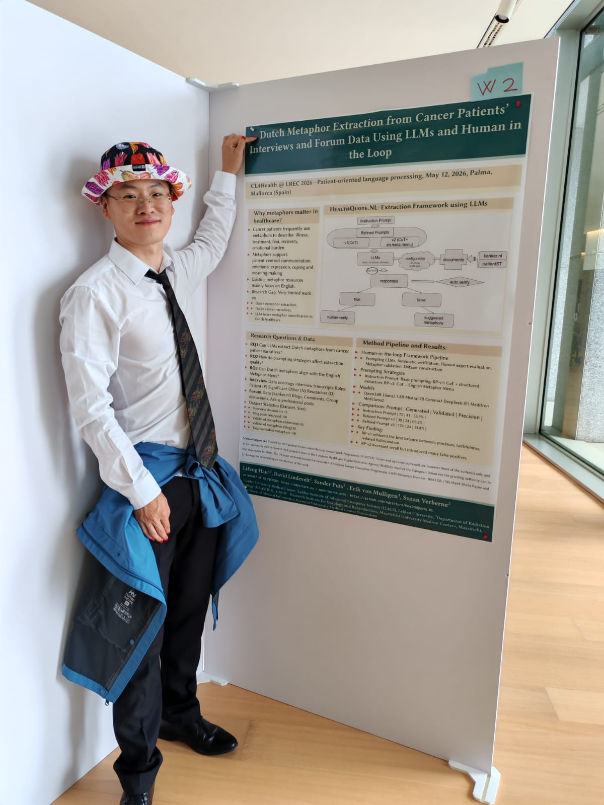

COMPUTATIONAL LINGUISTICS · MULTILINGUAL NLP
Lifeng Han PhD
Linguistically grounded and human-centred evaluation of multilingual language technologies.
My research connects machine translation, multi-word expressions, lexical and figurative semantics, and reliable large language models.

Research · Teaching · CollaborationUniversity of Manchester · Leiden University · Dublin City UniversityABOUT
Research at the intersection of language and AI
I am a computational linguist with a PhD from Dublin City University (awarded 2022). I have held research appointments at the University of Manchester and Leiden University Medical Center and taught at Leiden University and Manchester Metropolitan University. My work investigates how linguistic structure, meaning and human judgements can help us evaluate and improve multilingual language technologies.
My research includes independently developing LEPOR, designing Chinese character decomposition methods for machine translation, creating MultiMWE, coordinating AlphaMWE and the WMT 2026 Mind the Gap study, and supervising metaphor translation research including MetaHOPE and NewsMeta.
RESEARCH
Research directions
Multilingual NLP & linguistic resources
Multi-word expressions, cross-linguistic variation, Chinese character representations, and multilingual corpora such as MultiMWE and AlphaMWE.
Evaluation & LLM reliability
LEPOR, HOPE, linguistically targeted diagnostics, human-centred evaluation and systematic translation blind spots.
Figurative language & semantics
Metaphor translation, semantic preservation and annotation-based evaluation through MetaHOPE and NewsMeta.
Clinical & applied NLP
Clinical machine translation, biomedical information extraction, synthetic clinical text and reliability in specialised domains.
RECENT HIGHLIGHTS
News & milestones
- 2026 — Coordinated Mind the Gap (WMT 2026), examining LLM translation blind spots with AlphaMWE.
- 2026 — Supervised MetaHOPE (ICNLSP 2026) and NewsMeta (submitted to Language Resources and Evaluation; preprint available).
- 2024–2026 — Research and teaching appointments at Leiden University and Leiden University Medical Center.
PUBLICATIONS
Selected publications
15 selected works with a computational linguistics and multilingual NLP focus. Accepted works are labelled as such; the complete publication record follows.
- L. Han et al. “Mind the Gap: Exposing LLM Translation Blind Spots Using the AlphaMWE Multilingual Parallel Corpus." WMT 2026.
- J. Liang and L. Han. “MetaHOPE: A Metaphor-Oriented Evaluation Framework for Analysing MT and LLM Translation Errors." ICNLSP 2026.
- J. Liang and L. Han. “Towards End-to-End Multilingual Metaphor Processing: Integrating Detection, Translation, and Evaluation." AACL-IJCNLP 2026 Student Research Workshop (accepted).
- L. Han et al. “Towards a Resource for Multilingual Lexicons: An MT Assisted and Human-in-the-Loop Multilingual Parallel Corpus with Multi-Word Expression Annotation." Language Resources and Evaluation (published online).
- A. Alabdullah, L. Han and C. Lin. “Ara-HOPE: Human-Centric Post-Editing Evaluation for Dialectal Arabic to Modern Standard Arabic Translation." VarDial at EACL 2026.
- S. Gladkoff et al. “Looking under the Wrong Lamppost: On the Limitations of Automated Translation Quality Estimation." ICNLSP 2026 (accepted).
- L. Bogdanova et al. “FLANS at SemEval-2026 Task 7: RAG with Open-Sourced Smaller LLMs for Everyday Knowledge Across Diverse Languages and Cultures." SemEval 2026 (accepted).
- K. Yin Hong et al. “CANTONMT: Investigating Back-Translation and Model-Switch Mechanisms for Cantonese-English Neural Machine Translation." ACM TALLIP (accepted).
- L. Han et al. “Neural Machine Translation of Clinical Text: An Empirical Investigation into Multilingual Pre-Trained Language Models and Transfer-Learning." Frontiers in Digital Health 6 (2024).
- S. Gladkoff and L. Han. “HOPE: A Task-Oriented and Human-Centric Evaluation Framework Using Professional Post-Editing Towards More Effective MT Evaluation." LREC 2022.
- L. Han et al. “cushLEPOR: Customising hLEPOR Metric Using Optuna for Higher Agreement with Human Judgments or Pre-trained Language Model LaBSE." WMT 2021.
- L. Han et al. “Chinese Character Decomposition for Neural MT with Multi-Word Expressions." NoDaLiDa 2021.
- L. Han, G. Jones and A. Smeaton. “MultiMWE: Building a Multi-lingual Multi-Word Expression (MWE) Parallel Corpora." LREC 2020.
- L. Han, G. Jones and A. Smeaton. “AlphaMWE: Construction of Multi-lingual Parallel Corpora with MWE Annotations." MWE-LEX at COLING 2020.
- L. Han, D. F. Wong and L. S. Chao. “LEPOR: A Robust Evaluation Metric for Machine Translation with Augmented Factors." COLING 2012.
Complete peer-reviewed and accepted publication record
Entries follow the supplied academic CV. Author lists are abbreviated in the CV source; please verify individual bibliographic details before public release.
2026 12 entries
- L. Han et al. “Mind the Gap: Exposing LLM Translation Blind Spots Using the AlphaMWE Multilingual Parallel Corpus." WMT 2026.
- J. Liang and L. Han. “MetaHOPE: A Metaphor-Oriented Evaluation Framework for Analysing MT and LLM Translation Errors." ICNLSP 2026.
- J. Liang and L. Han. “Towards End-to-End Multilingual Metaphor Processing: Integrating Detection, Translation, and Evaluation." AACL-IJCNLP 2026 Student Research Workshop (accepted).
- M. Zhyrko, S. Verberne and L. Han. “Time as Structure: Temporal Dependency Graphs for Verifiable Deadline Computation over Legal Documents." AACL-IJCNLP 2026 Student Research Workshop (accepted).
- M. C. Staiano et al. “SIREN: Situation-aware Index for Response and Emergency ActioNability in Crisis Translation." LT4CPR at AACL-IJCNLP 2026 (accepted).
- S. Gladkoff et al. “Looking under the Wrong Lamppost: On the Limitations of Automated Translation Quality Estimation." ICNLSP 2026 (accepted).
- M. Zhyrko et al. “DreamerNLplus: Interpretable Modeling of Mental Health Dynamics from Social Media Timelines using Hybrid Rule-Based and RAG Methods." CLPsych 2026 (accepted).
- A. J. W. de Vink et al. “QuadAI at SemEval-2026 Task 3: Ensemble Learning of Hybrid RoBERTa and LLMs for Dimensional Aspect-Based Sentiment Analysis." SemEval 2026 (accepted).
- L. Bogdanova et al. “FLANS at SemEval-2026 Task 7: RAG with Open-Sourced Smaller LLMs for Everyday Knowledge Across Diverse Languages and Cultures." SemEval 2026 (accepted).
- A. Alabdullah, L. Han and C. Lin. “Ara-HOPE: Human-Centric Post-Editing Evaluation for Dialectal Arabic to Modern Standard Arabic Translation." VarDial at EACL 2026.
- T.-C. Ionescu et al. “Analyzing Cancer Patients' Experiences with Embedding-based Topic Modeling and LLMs." CLIN Journal (accepted).
- L. Han et al. “Towards a Resource for Multilingual Lexicons: An MT Assisted and Human-in-the-Loop Multilingual Parallel Corpus with Multi-Word Expression Annotation." Language Resources and Evaluation (published online).
2025 11 entries
- L. Ren, Y. M. Ng and L. Han. “MaLei at MultiClinSUM: Summarisation of Clinical Documents using Perspective-Aware Iterative Self-Prompting with LLMs." BioASQ Workshop at CLEF 2025.
- A. J. W. de Vink, N. Amat-Lefort and L. Han. “ReviewGraph: A Knowledge Graph Embedding Based Framework for Review Rating Prediction with Sentiment Features." ICKG 2025 (listed as forthcoming in source CV).
- M. C. Staiano et al. “ITALERT: Assessing the Quality of LLMs and NMT in Translating Italian Emergency Response Text." MT Summit 2025.
- Z. Ling et al. “MALEI at the PLABA Track of TAC-2024: RoBERTa for Task 1 - LLaMA3.1 and GPT-4o for Task 2." TREC Conference (listed under 2025).
- S. Belkadi et al. “MLM4SynMed: Masked Language Modelling for Synthetic Free-text Medical Records Generation." IEEE ICHI 2025.
- D. Shaji et al. “Advancing De-identification of Clinical Texts using Biomed-Clinical BERTs and Comprehensive Privacy Risk Assessment." IEEE ICHI 2025 (poster).
- L. Ren et al. “Synthetic4Health: Generating Annotated Synthetic Clinical Letters." Frontiers in Digital Health 7 (2025).
- L. Ren et al. “Beyond Reconstruction: Generating Privacy-Preserving Clinical Letters." CL4Health at NAACL 2025.
- P. Romero, L. Han and G. Nenadic. “Medication Extraction and Entity Linking using Stacked and Voted Ensembles on LLMs." CL4Health at NAACL 2025.
- P. Romero et al. “The Manchester Bees at PerAnsSumm 2025: Iterative Self-Prompting with Claude and o1 for Perspective-aware Healthcare Answer Summarisation." CL4Health at NAACL 2025.
- S. Belkadi et al. “LT3: Generating Medication Prescriptions with Conditional Transformer." CL4Health at NAACL 2025.
2024 7 entries
- K. Yin Hong et al. “CantonMT: Cantonese-English Neural Machine Translation Looking into Evaluations." AMTA 2024.
- K. Yin Hong et al. “CANTONMT: Investigating Back-Translation and Model-Switch Mechanisms for Cantonese-English Neural Machine Translation." ACM TALLIP (accepted).
- A. Lommel et al. “The Multi-Range Theory of Translation Quality Measurement: MQM Scoring Models and Statistical Quality Control." AMTA 2024.
- L. Han et al. “Neural Machine Translation of Clinical Text: An Empirical Investigation into Multilingual Pre-Trained Language Models and Transfer-Learning." Frontiers in Digital Health 6 (2024).
- K. Yin Hong et al. “CantonMT: Cantonese to English NMT Platform with Fine-Tuned Models Using Synthetic Back-Translation Data." EAMT 2024.
- Z. Li et al. “Investigating Large Language Models and Control Mechanisms to Improve Text Readability of Biomedical Abstracts." IEEE ICHI 2024.
- S. Gladkoff et al. “MTUncertainty: Assessing the Need for Post-editing of Machine Translation Outputs by Fine-tuning OpenAI LLMs." EAMT 2024.
2023 10 entries
- Z. Li et al. “BeeManc at the PLABA Track of TAC 2023: Investigating LLMs and Controllable Attributes for Improving Biomedical Text Readability." TAC 2023.
- S. Belkadi et al. “Generating Medical Instructions with Conditional Transformer." SyntheticData4ML at NeurIPS 2023.
- S. Belkadi et al. “Exploring the Value of Pre-trained Language Models for Clinical Named Entity Recognition." IEEE BigData 2023 workshop.
- H. Tu, L. Han and G. Nenadic. “Extraction of Medication and Temporal Relation from Clinical Text using Neural Language Models." IEEE BigData 2023 workshop.
- B. Griciute, L. Han and G. Nenadic. “Topic Modelling of Swedish Newspaper Articles about Coronavirus: A Case Study using Latent Dirichlet Allocation Method." IEEE ICHI 2023.
- N. H. Mohamed et al. “AlphaMWE-Arabic: Arabic Edition of Multilingual Parallel Corpora with Multiword Expression Annotations." RANLP 2023.
- S. Gladkoff, L. Han and G. Nenadic. “Student's t-Distribution: On Measuring the Inter-Rater Reliability When the Observations are Scarce." RANLP 2023.
- Y. Cui, L. Han and G. Nenadic. “MedTem2.0: Prompt-based Temporal Classification of Treatment Events from Discharge Summaries." ACL 2023 Student Research Workshop.
- S. Schulz et al. “Towards Principles of Ontology-based Annotation of Clinical Narratives." ICBO 2023.
- L. Han et al. “Investigating Massive Multilingual Pre-Trained Machine Translation Models for Clinical Domain via Transfer Learning." ClinicalNLP at ACL 2023.
2022 3 entries
- L. Han et al. “Examining Large Pre-Trained Language Models for Machine Translation: What You Don't Know About It." WMT 2022.
- S. Gladkoff and L. Han. “HOPE: A Task-Oriented and Human-Centric Evaluation Framework Using Professional Post-Editing Towards More Effective MT Evaluation." LREC 2022.
- S. Gladkoff et al. “Measuring Uncertainty in Translation Quality Evaluation (TQE)." LREC 2022.
2021 5 entries
- L. Han. “Meta-Evaluation of Machine Translation Evaluation Methods." SIG-MET at ASIS&T 2021 (tutorial paper).
- L. Han et al. “cushLEPOR: Customising hLEPOR Metric Using Optuna for Higher Agreement with Human Judgments or Pre-trained Language Model LaBSE." WMT 2021.
- G. Erofeev et al. “cushLEPOR Uses LaBSE Distilled Knowledge to Improve Correlation with Human Translation Evaluations." MT Summit 2021 User Track.
- L. Han et al. “Chinese Character Decomposition for Neural MT with Multi-Word Expressions." NoDaLiDa 2021.
- L. Han, G. Jones and A. Smeaton. “Translation Quality Assessment: A Brief Survey on Manual and Automatic Methods." MoTra 2021.
2020 2 entries
- L. Han, G. Jones and A. Smeaton. “MultiMWE: Building a Multi-lingual Multi-Word Expression (MWE) Parallel Corpora." LREC 2020.
- L. Han, G. Jones and A. Smeaton. “AlphaMWE: Construction of Multi-lingual Parallel Corpora with MWE Annotations." MWE-LEX at COLING 2020.
2018 2 entries
- L. Han and S. Kuang. “Incorporating Chinese Radicals into Neural Machine Translation: Deeper than Character Level." ESSLLI 2018.
- E. Moreau et al. “Semantic Re-Ranking of CRF Label Sequences for Verbal Multi-Word Expression Extraction." Language Science Press, edited volume (2018).
2017 1 entries
- A. Maldonado et al. “Detection of Verbal Multi-Word Expressions via Conditional Random Fields with Syntactic Dependency Features and Semantic Re-Ranking." MWE Workshop at EACL 2017.
2015 1 entries
- L. Han et al. “Chinese Named Entity Recognition with Graph-based Semi-supervised Learning Model." SIGHAN at ACL-IJCNLP 2015.
2014 2 entries
- L. Han et al. “A Universal Phrase Tagset for Multilingual Treebanks." CCL and NLP-NABD 2014, Springer LNAI 8801.
- L. Han et al. “Unsupervised Quality Estimation Model for English to German Translation and Its Application in Extensive Supervised Evaluation." The Scientific World Journal (2014).
2013 7 entries
- L. Han et al. “Language-independent Model for Machine Translation Evaluation with Reinforced Factors." MT Summit XIV (2013).
- L. Han et al. “A Description of Tunable Machine Translation Evaluation Systems in WMT13 Metrics Task." WMT 2013.
- L. Han et al. “Quality Estimation for Machine Translation Using the Joint Method of Evaluation Criteria and Statistical Modeling." WMT 2013.
- L. Han et al. “Phrase Tagset Mapping for French and English Treebanks and Its Application in Machine Translation Evaluation." GSCL 2013, Springer LNCS 8105.
- L. Han et al. “A Study of Chinese Word Segmentation Based on the Characteristics of Chinese." GSCL 2013, Springer LNCS 8105.
- L. Han et al. “Automatic Machine Translation Evaluation with Part-of-Speech Information." TSD 2013, Springer LNAI 8082.
- L. Han et al. “Chinese Named Entity Recognition with Conditional Random Fields in the Light of Chinese Characteristics." IIS 2013, Springer LNCS 7912.
2012 1 entries
- L. Han, D. F. Wong and L. S. Chao. “LEPOR: A Robust Evaluation Metric for Machine Translation with Augmented Factors." COLING 2012.
Submitted manuscript: J. Liang, T. Duan, A. Zhang, Y. Huang, X. Deng, and L. Han. Towards a Resource for News Domain Bilingual Metaphor-Annotated Corpus: LLMs Walk on Thin Ice When Translating Metaphors. Submitted to Language Resources and Evaluation; Leiden University Scholarly Publications preprint.
BACKGROUND
Academic experience & education
Appointments
- 2024–2026 — Postdoctoral Research Associate, Leiden University Medical Center
- 2024–2026 — Lecturer, Leiden University (LIACS)
- 2022–2024 — Postdoctoral Research Associate, University of Manchester
- 2023 — Part-time Lecturer, Manchester Metropolitan University
- 2014–2016 — Researcher, University of Amsterdam (ILLC)
- 2011–2014 — Research Assistant, University of Macau
Education
- 2022 — PhD, Natural Language Processing, Dublin City University
- 2014 — MSc, Software Engineering, University of Macau
- 2011 — BSc, Mathematics and Applied Mathematics, Hebei Normal University
Research leadership
Program Co-Chair, MWE 2023 and MWE–UD 2024; ACL SIGLEX-MWE standing committee; supervision of student-led publications.
ACADEMIC ACTIVITIES
Invited talks & tutorials
- 2026 — LREC tutorial, HealthcareNLP: Where Are We and What's Next?
- 2025 — Invited online talk, Lancaster University NLP Group, Clinical NLP and the 4D PICTURE Project.
- 2022 — Invited in-person talk, University of Stuttgart NLP group (travel funded), Cracking Multi-Word Expressions in a Nutshell: Neural MT Walks on Thin Ice When Facing MWEs.
- 2022 — LREC tutorial, Meta-Evaluation of Translation Evaluation Methods: A Systematic Up-to-Date Overview.